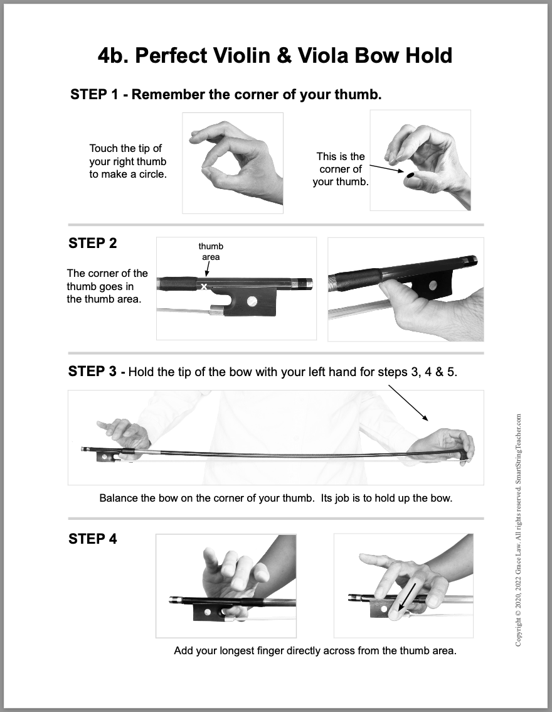
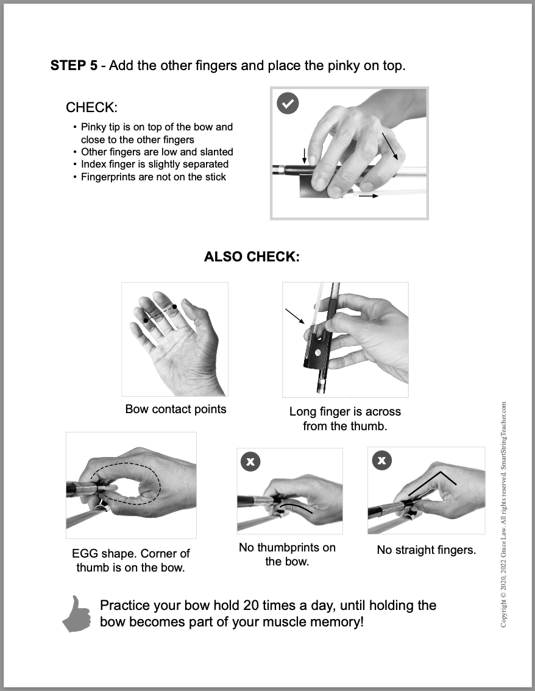
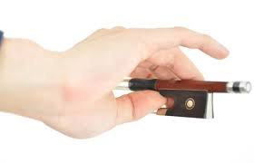
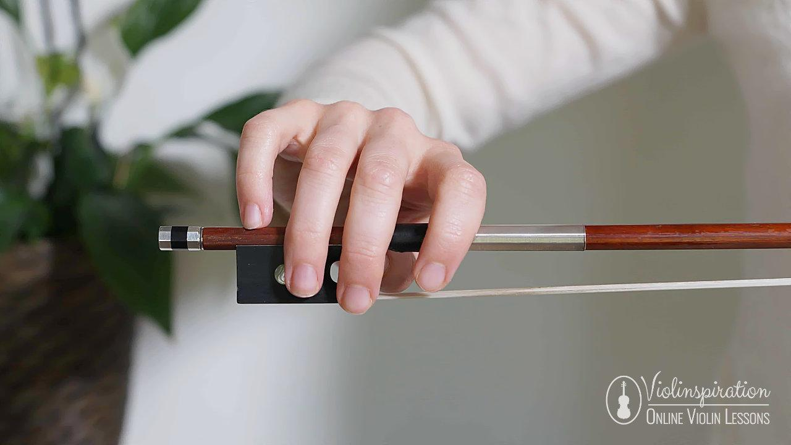
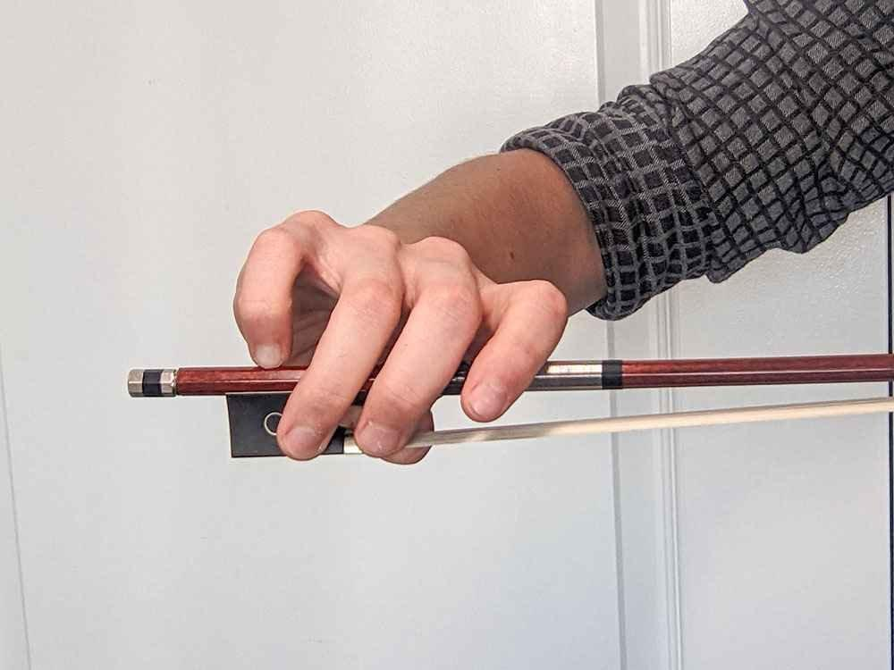
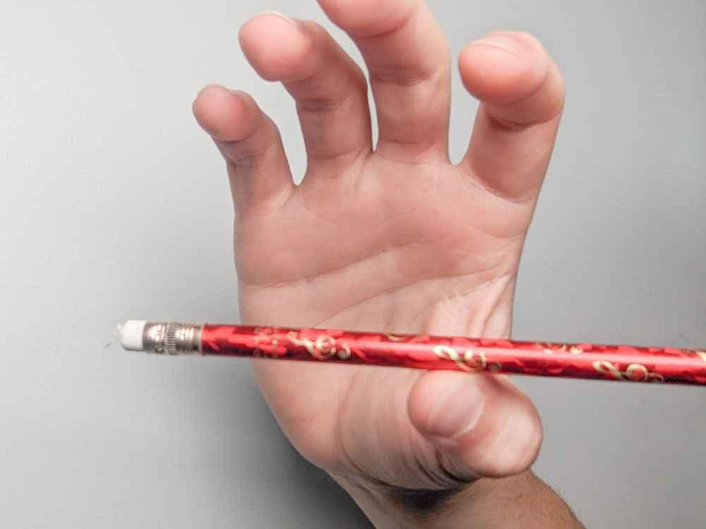

The "Golden Rule": Flexibility over Strength
Before explaining finger placement, it is essential to understand that the bow hold is not a "grip". It is a flexible framework designed to balance control with absolute freedom of movement.
The Feel
Imagine holding a small, delicate bird — firm enough so it doesn't fly away, but gentle enough so you don't hurt it.
The Mechanics
The bow rests in the hand; we do not squeeze it. Power comes from arm weight, not finger squeezing.
Step-by-Step Finger Placement
Follow this checklist to establish the foundation of the Franco-Belgian bow hold, the industry standard for modern playing.
| Finger | Position | Key Action / Role |
|---|---|---|
| Thumb | Curved (never straight!) on the underside, opposite the middle finger. | The "anchor" that provides upward pressure. |
| Index | Rests on the stick at the middle joint. | Controls the weight and volume applied to the string. |
| Middle & Ring | Draped naturally over the side of the frog. | Provides stability and lateral control. |
| Pinky | Curved and sitting on top of the stick. | Acts as the "counterbalance" to lighten the bow at the frog. |
| Wrist | Level or slightly rounded, never "collapsed" downward. | Allows the arm's weight to flow cleanly into the bow. |


The "Pillars of Success" (Visual Cues)
Use these three visual checks to self-correct your hand position during practice sessions.
The thumb and middle finger should form a soft circle or "O" shape when viewed from the side. This is the central axis of the bow hold.
Every single joint in every finger should be curved. If a finger looks "flat" or "locked," it’s creating tension that will choke your tone.
The hand should lean slightly toward the index finger (toward the tip of the bow), not sit flat like a pancake. This pronation naturally transfers arm weight into the string.



Video class: Establishing the Foundation
Common Pitfalls to Highlight
Avoid these classic beginner mistakes to accelerate your technical development.
If your thumb goes straight, your whole wrist and elbow will freeze. Keep it shaped like a soft "C". A locked thumb guarantees a scratchy tone.
Beginners often squeeze the stick with all fingers. Remind yourself that the bow should feel like it's hanging from the hand, not being choked to death.
If the pinky flatlines, you lose control when playing near the bottom of the bow (the frog). It must stay "on its tip" to function as a shock absorber.
Video Masterclass: Troubleshooting Errors
Pro-Tip: The "Pencil Trick"
The smartest way to build muscle memory without the physical stress of holding a real bow.
